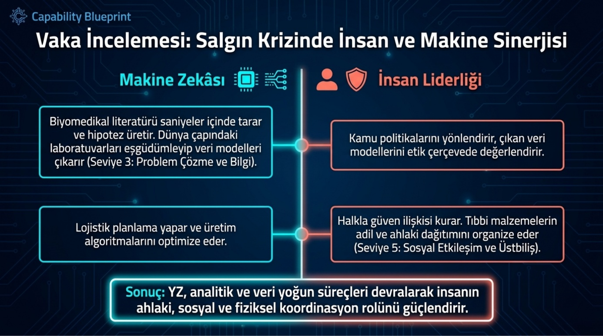
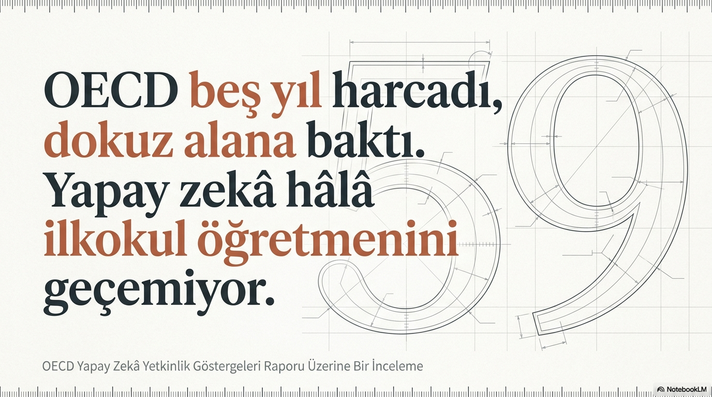
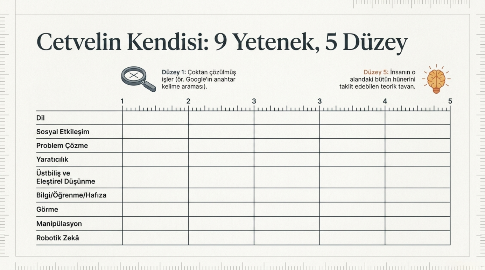
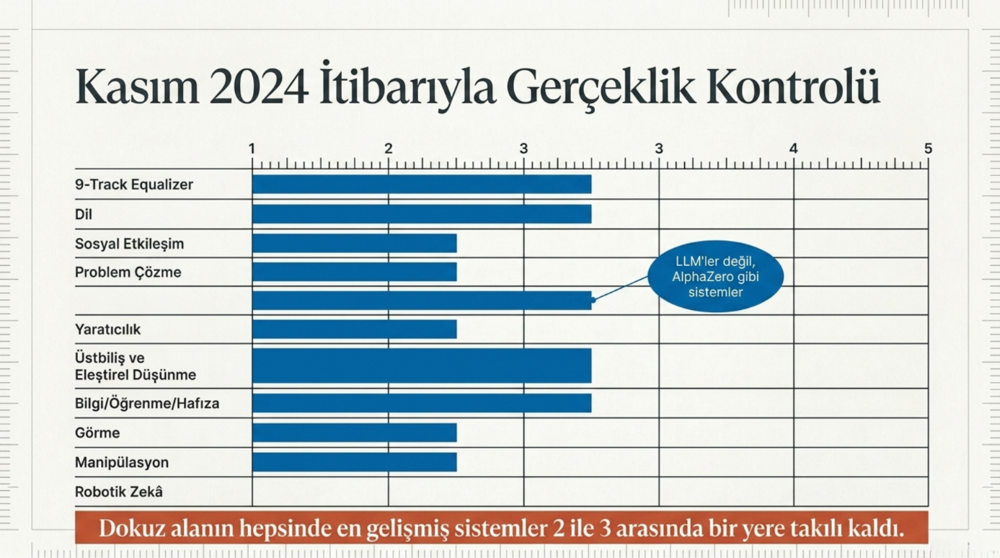
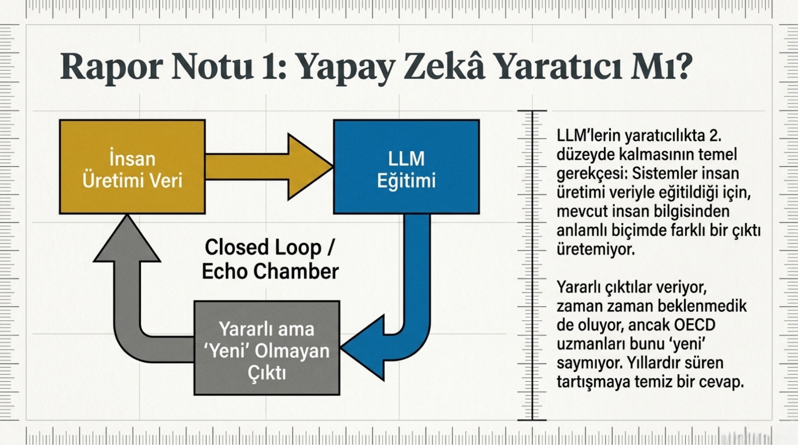

OECD'nin nisanda yayımladığı Yapay Zekâ Yetkinlik Göstergeleri raporunu okudum. MEB YEĞİTEK Türkçeye çevirmiş, açık kaynak.
Beş yıl çalışıp 32 uzmana yazdırıp 25 hakeme okutmuşlar. Söyledikleri şey kısa: yapay zekânın bugün gerçekte nerede olduğunu ölçmenin dürüst yolu, onu insan yeteneklerinin yanına koymak.

Cetvelin kendisi şöyle: dokuz tane yetenek alanı belirlemişler. Dil, sosyal etkileşim, problem çözme, yaratıcılık, üstbiliş ve eleştirel düşünme, bilgi ve öğrenme ve hafıza, görme, manipülasyon ve robotik zekâ. Her alana 1'den 5'e bir ölçek koymuşlar. 1. düzey çoktan çözülmüş işlerin yeri, Google'ın anahtar kelimeyle arama yapması orada duruyor. 5. düzey ise insanın o alandaki bütün hünerini taklit edebilen bir yapay zekâ. Yani teorik tavan.
Sonra Kasım 2024 itibarıyla en gelişmiş sistemleri bu cetvele oturtmuşlar. Sonuç şu: dokuz alanın hepsinde sistemler 2 ile 3 arasında bir yere takılı kalmış.

Dilde 3'teyiz. Yaratıcılıkta 3, ama burada LLM'ler değil, AlphaZero gibi nöro-sembolik sistemler. Bilgi-öğrenme-hafızada 3. Görmede 3. Geri kalan beş alanın hepsi 2.
GPT-4o dilde 3 ise neden 4 değil? Cevap raporda yazıyor. Sağlam akıl yürütme yapamıyor, halüsinasyon görüyor, gerçek zamanlı öğrenemiyor. Yani bilgiye erişiyor, çağırıyor, ama yapı altta dökülüyor. Bu sınırlar bütün ölçeklerde aynı şekilde karşımıza çıkıyor.
Robotik tarafta da hikâye buna benzer. Üretim hattındaki robot kol işini yapıyor, doğru. Nesne biraz yer değiştirsin ya da ışık biraz değişsin, kol duruyor. Manipülasyon ve robotik zekânın 2'de takılmasının sebebi bu. Bedeniniz olunca dünya bir anda zorlaşıyor.

Asıl mesele bu cetveli nereye uygulayacağımız. OECD bunu da göstermiş. Raporun dördüncü bölümünde O*NET veri tabanındaki yaklaşık 900 mesleğin gerektirdiği beceri profilini çıkarmışlar, sonra bugünkü yapay zekânın düzeyiyle karşılaştırmışlar. Örnek meslek olarak da ilkokul öğretmenliğini seçmişler.
Tahmin edin ne çıktı. Bir ilkokul öğretmeninin günlük işi, OECD'nin tanımıyla, dilde 5, sosyal etkileşimde 5, problem çözmede 4 düzeyinde beceri istiyor. Bugünkü en gelişmiş sistemler bu üç alanın hepsinde 2 ile 3 arası. Makinenin tam üstlenmesine iki ya da üç kademe mesafe var.
Bu rakam beni çok şaşırtmadı, sınıfta zaten gözle görüyorum. Ama kanıt diye bir şey var. Sezgiyle söylediğin şeyi kanıta bağladığında muhatabın tartışması zorlaşıyor.
Burada raporun bilinçli olarak sustuğu yer başlıyor.

Cetvel size bir mesleğin teknik olarak ne kadarının makineye gidebileceğini söylüyor. "Gitmeli mi" sorusuna cevap vermiyor, ve bunu bilerek yapmışlar. Müfredattan ne çıkacak, ne girecek, hangi öğretmen rolü makineye devredilebilir, hangisi insanda kalmalı. Bunlar değer kararı. Politika yapıcı, eğitimci ve toplum bu masaya oturup tartışacak. Cetvel sadece masayı kuruyor.
Raporu okurken iki not aldım, paylaşıyorum.
Birincisi yaratıcılık tarafı. LLM'lerin 2'de değerlendirilmesinin gerekçesi şu: sistemler insan üretimi veriyle eğitildiği için, mevcut insan bilgisinden anlamlı biçimde farklı bir çıktı üretemiyor. Yararlı çıktılar veriyor, zaman zaman beklenmedik de oluyor, ama OECD'nin uzmanları bunu "yeni" saymıyor. Yıllardır "yapay zekâ yaratıcı mı" diye süren tartışmaya bence temiz bir cevap.
İkincisi pandemi senaryosu. Rapor, orta düzeyde problem çözen bir yapay zekânın salgın durumunda neyi yapabileceğini somut bir hikâyeyle anlatıyor. Yapay zekâ verileri tarıyor, hipotezi kuruyor, küresel dağıtım planını çıkarıyor. İnsan tarafında kalan iş daha çok şuna benziyor: kararı vermek, etiği taşımak, krizi yönetmek, sahaya inip aşıyı uygulamak. Bu ayrım kafamda zaten netti, ama kâğıda dökülmüş hâlini görmek başka oluyor.

Büyük bir aydınlanma yaşadım diyemem, ama yapay zekâ üzerine sınıfta ve dışarıda konuşurken neyi nereye oturtacağıma dair bir cetvelim oldu. Asıl kazanım bu.
Cetvelin tam sürümü henüz çıkmadı. Bu beta. OECD geri bildirim topluyor, ilk güncellemeyi 2026'da yayımlamayı planlıyor.
Bu arada bir soruyu açık bırakıyorum: bir mesleğin yapay zekâya hangi hızla, hangi sırayla geçeceğini cetvel ölçebiliyorsa, bir öğrencinin neyi öğreneceğine kim karar verecek? Cetvel mi, müfredat hazırlayan mı, sınıftaki öğretmen mi, yoksa o sınıfa girip çıkacak çocuğun kendi tercihi mi?
Not: Raporun Türkçe sürümüne MEB YEĞİTEK üzerinden, ölçeklerin canlı veri tabanına ise aicapabilityindicators.oecd.org adresinden ulaşılabilir.